The Dunes
The Dunes is a Studio Symbiosis resort project in Udaipur organised as a distributed field of villas within a desert landscape. Curved architectural geometry, local masonry and earthen finishes connect the digital model to regional construction.
The available supplementary documentation records the shared project process: Rhino and Grasshopper geometry, rebar and wall coordination, a perforated facade gradient, a finite triangular component family, setting out and site construction. It is used here as project-process context and does not transfer another team member’s individual responsibilities to Naitik.
Architecture emerging from a desert landscape
The project uses a dispersed resort organisation and curved villa geometry to establish continuity between landscape, movement and built form. Local material and construction knowledge remain part of the computational-design problem.
Rhino and Grasshopper as coordination geometry
Curved villa surfaces are developed as controlled geometric references that can be interrogated for structural, masonry, facade and setting-out requirements.
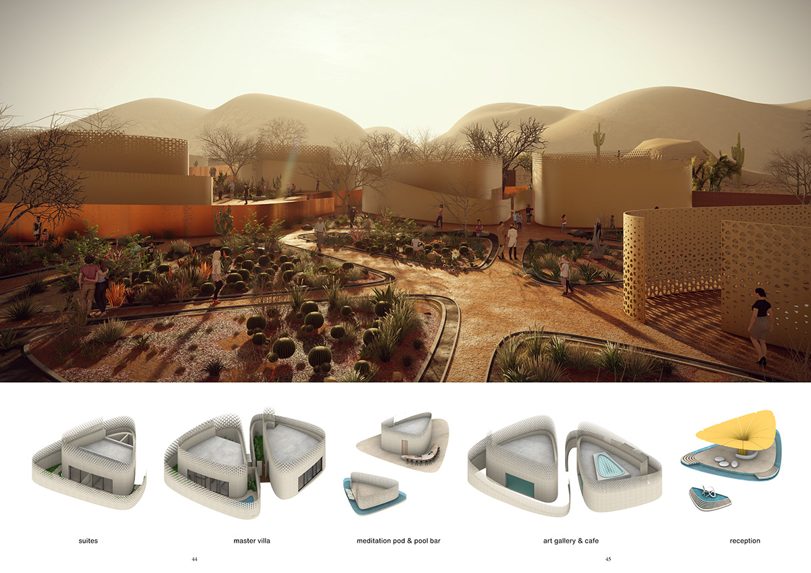

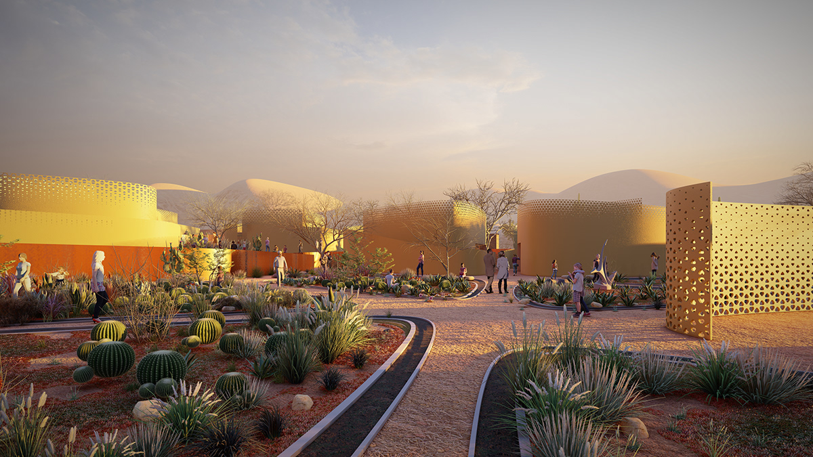
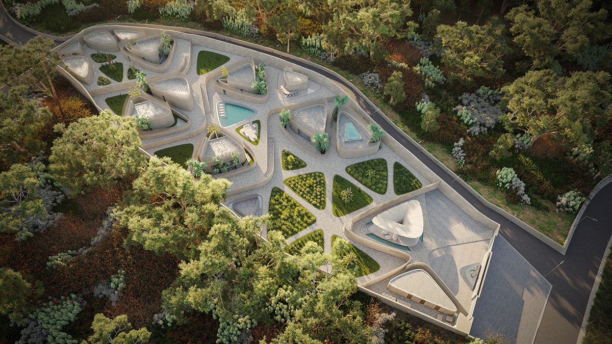
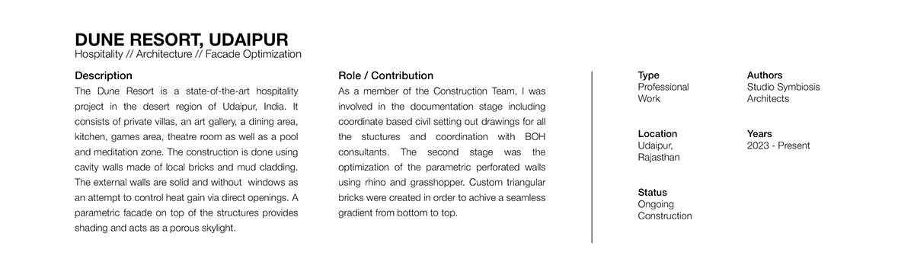

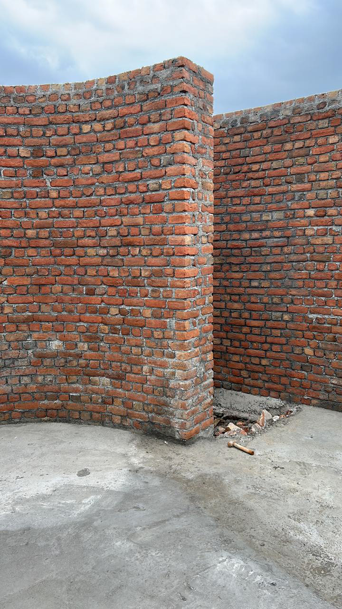
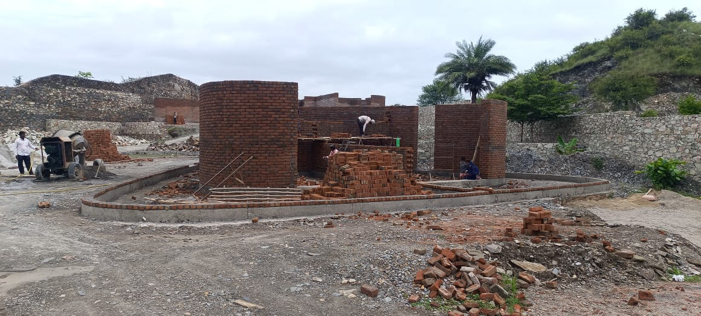
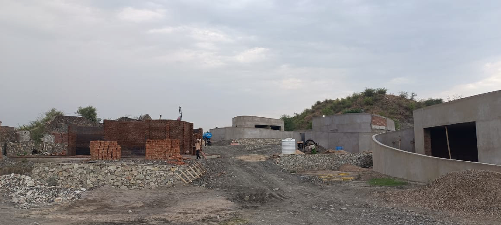
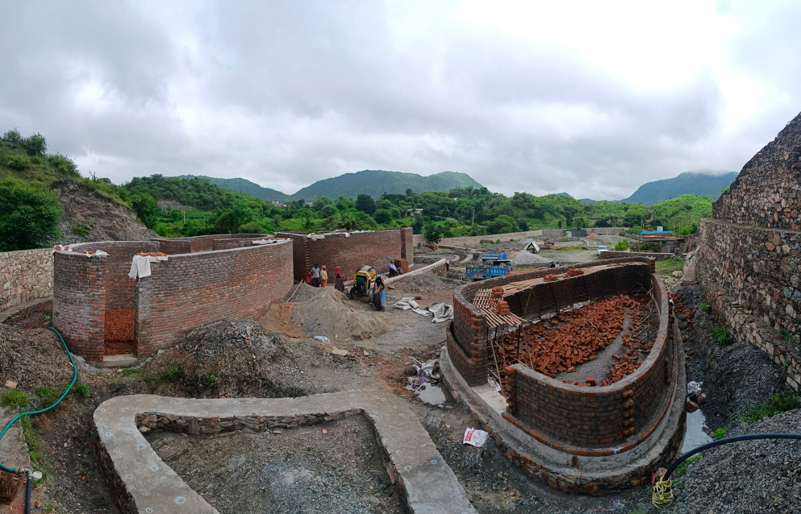
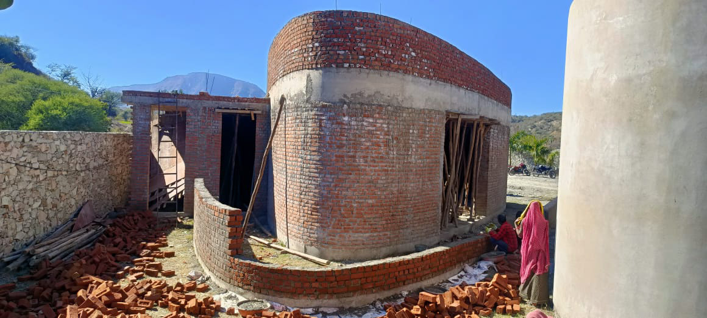
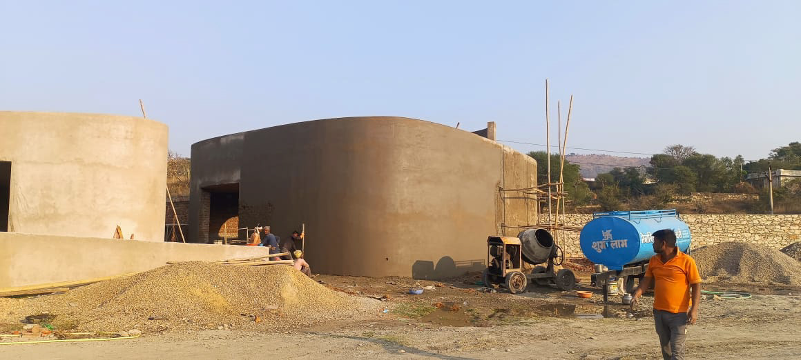
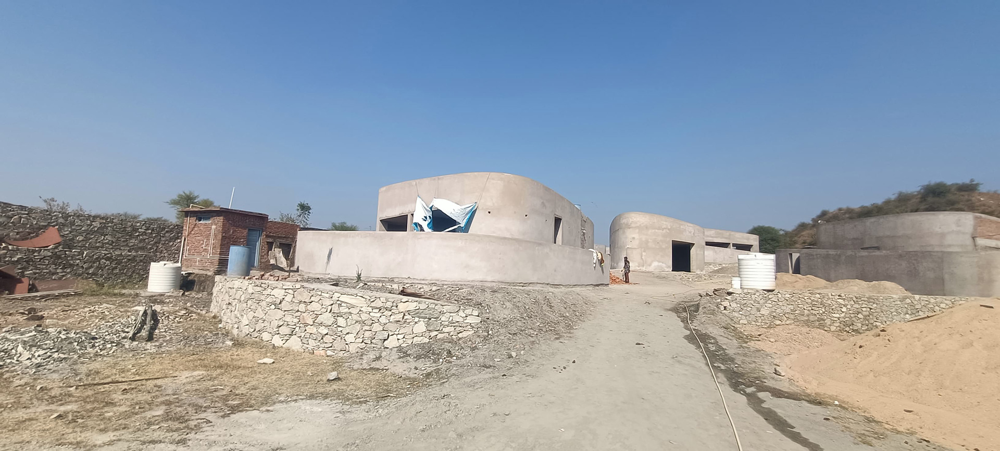
Credits
- Architectural project
- Studio Symbiosis
- Media
- Reference project documentation — Grahesh Bhandari